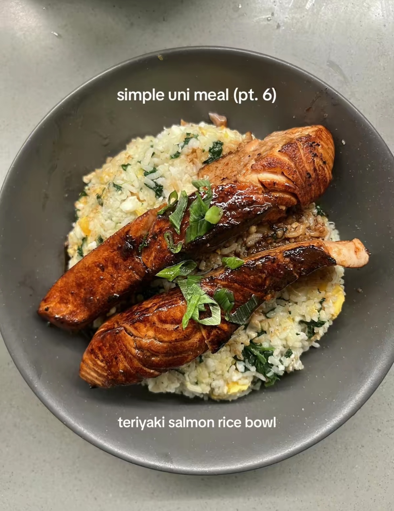

Teriyaki Salmon Rice Bowl

Description
I've included this recipe from TikTok (user: jollyxx) because my partner likes salmon. This serves 2 people.
Ingredients
Marinated Salmon
- 4 portions of salmon
- 4 tbsp light soy sauce
- 4 tbsp mirin
- 2 tbsp honey
- 2 tbsp lemon juice (optional)
Rice
- 1 cup white rice
- 6 eggs
- 2 handfuls spinach
- 2-4 tbsp sesame oil
- 2-4 tbsp soy sauce
- 1 stalk spring onions (for garnish)
Steps
- Combine all the ingredients for the salmon marinate, mix, and marinate the salmon for 30 minutes.
- Cook the white rice.
- Sear the skin of the salmon, then fry the salmon for 2-3 minutes each side over medium-high heat.
- Add marinate sauce to the pan and let it cook for 3-4 minutes under low-medium heat.
- In the meantime, fry the eggs to the over hard stage.
- Boil spinach.
- Incorporate the cooked eggs, boiled spinach, sesame oil, and soy sauce into the cooked rice.
- Add the salmon onto the rice, drizzle the marinate sauce on top, add spring onions, and serve.